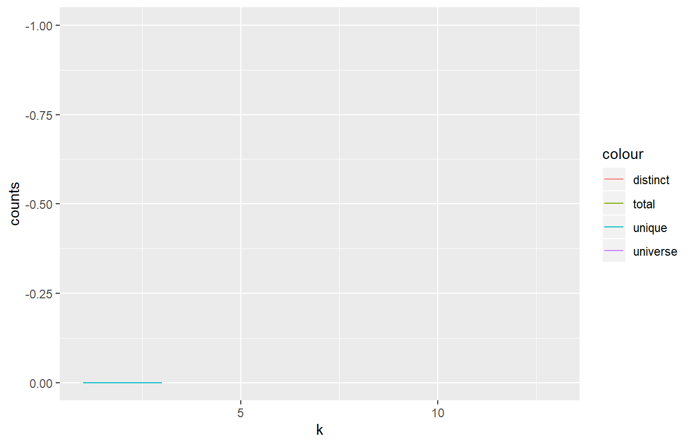
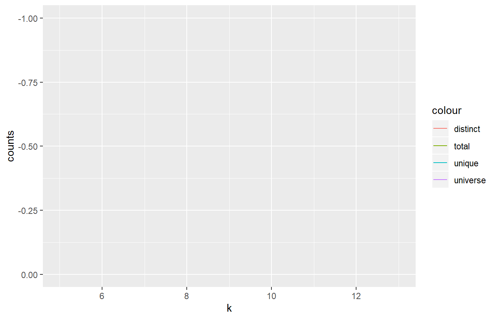
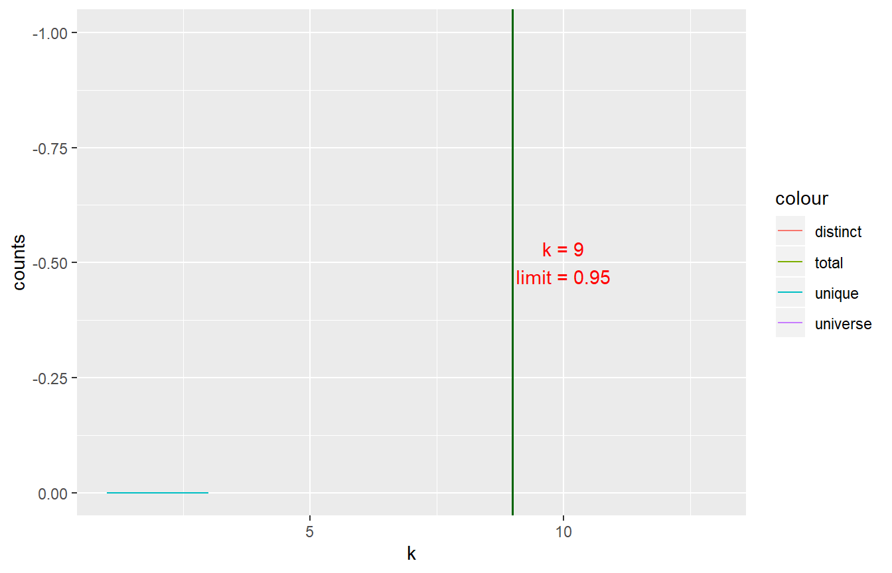

Main challenges
A major challenge is to decide on a minimal k-mer size that still is capable to support the envisioned application. The longer the k-mers become the more combinations are possible and so an index in a database will become very big or too big. Along with this, the time to create and consult the database will increase. While this can be remedied to a certain extent with parallel computing, it is still desirable and cheaper, to keep the k-mer size small.
Due to the many still unknown factors in genome biology it is yet not possible to calculate exactly how many distinct k-mers to expect for a certain k and a given species. In general we expect, with increasing k to have more unique k-mers. We also expect, that within a species the unqiue k-mers are limited.
In principle, it is possible to heuristically estimate the total number of k-mers, the distinct, and the unique k-mers by systematically scanning a genome for a certain k range. Experience has shown that it is convenient to only consider kmers of of uneven numbers.
Here, the example of the virus phix174 (the first sequenced organism) shows the principle following a blogpost here(x). Another wording is, to evaluate the genomic response to changes in k.
Genomic Response of Phi x 174
This package contains the full sequende of PhiX174 from NCBI.
These k values are: 5, 7, 9, 11, 13, 15, 17, 19, 21.
The convenience method for the genomic response returns a summary table. This includes also the theoretical maximum number of k-mers (the k-mer universe) for each value of k.
phix_response <- kmr_response(fa, k)
#> 7
#> 9
#> 11
#> 13The resulting table shows only values up to 13. This is because currently, it stops once the number of unique k-mers equals (exactly more than .9999) the distinct k-mers. This means, at and after this k value all k-mers have become unique.
knitr::kable(phix_response)| k | unique | distinct | total | universe |
|---|---|---|---|---|
| 5 | 10 | 506 | 5382 | 512 |
| 7 | 2295 | 3547 | 5380 | 8192 |
| 9 | 4972 | 5170 | 5378 | 131072 |
| 11 | 5346 | 5361 | 5376 | 2097152 |
| 13 | 5374 | 5374 | 5374 | 33554432 |
| Plott | ing this | table shows | the fol | lowing response curve: |
p <- kmr_plot_response(phix_response)
p
#> geom_path: Each group consists of only one observation. Do you need to adjust
#> the group aesthetic? ### Chosing a cutoff value
Now the curves for the unique and distinct k-mers follow an S curve or power law curve with diminishing response in variability (distinct / unique) as k increases. At around 95% there seems to be a distinct land mark.
It could be an example of the 95/5 rule going back to Deming: He argued that 95% of an organization’s performance depends on the quality of the system, and that only 5% is attributable to the actions of discrete individuals. In analogy, one could expect that most of an organisms makeup is needed for basic house keeping and maybe 5% are interesting ‘diversity’.
lim <- .95
kc_9 <- max(phix_response$total) * lim
kc_9
#> [1] 5112.9So, this cutoff value can be added to the graph as follows:
p <- p +
geom_hline(yintercept = kc_9, linetype = "dashed", color = "darkgreen", lwd = .6)
p
#> geom_path: Each group consists of only one observation. Do you need to adjust
#> the group aesthetic? And the corresponding k value can be extracted as follows adding a correction of the step size value (2).
k_9 <- max(phix_response[phix_response$distinct < kc_9, "k"]) + step
k_9
#> [1] 9This gives a k-value that captures the k value in the genomic response of phix174 after which diversity decreases rapidly.
phix_response[phix_response$k >= (k_9 - 2), "unique"] / phix_response[phix_response$k >= (k_9 - 2), "distinct"]
#> [1] 0.6470257 0.9617021 0.9972020 1.0000000k_lim = 9
yk = 2000
p <- kmr_plot_response(phix_response, limit = lim)
p
#> geom_path: Each group consists of only one observation. Do you need to adjust
#> the group aesthetic?